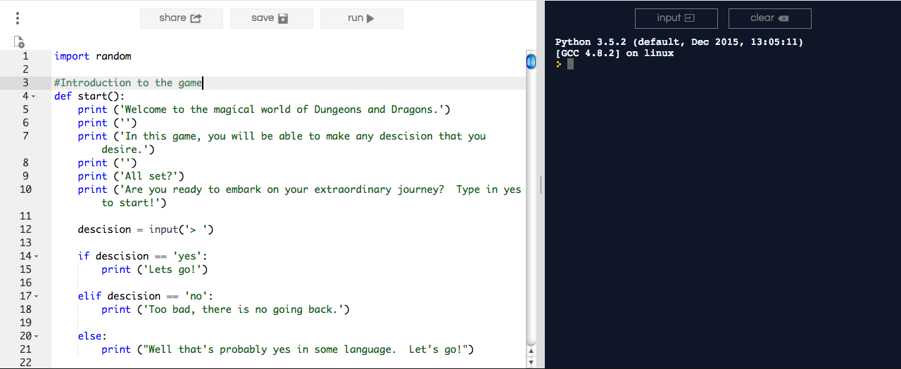

Home
Glenn's Portfolio
My First Scratch Project
 This is my very first scratch project. Click the picture to view it.
This is my very first scratch project. Click the picture to view it.
Pong on Scratch
 This is my second scratch project, where we were requried to make either a game, something educational, a story, or a music video. My parter and I re-created a pong game. Click the picture to play.
This is my second scratch project, where we were requried to make either a game, something educational, a story, or a music video. My parter and I re-created a pong game. Click the picture to play.
English Interactive Story
This is an interactive story on repl.it that takes a current english assignment, which in this case regards memories, and turn it into an interactive story. Click the picture to explore my parter's and my memories.
Dungeons and Dragons

This is an application made on repl.it where my partner and I created a version of Dungeons and Dragons, and RPG full of user descisions and luck.
Sleep vs. GPA
 For this project, my partner and I recieved a question from another partnership and we utilized data we found online to create a scatterplot as well as an answer to the question we were given. Click the picture to download a zip file containing the code, the data, and the design brief.
For this project, my partner and I recieved a question from another partnership and we utilized data we found online to create a scatterplot as well as an answer to the question we were given. Click the picture to download a zip file containing the code, the data, and the design brief.